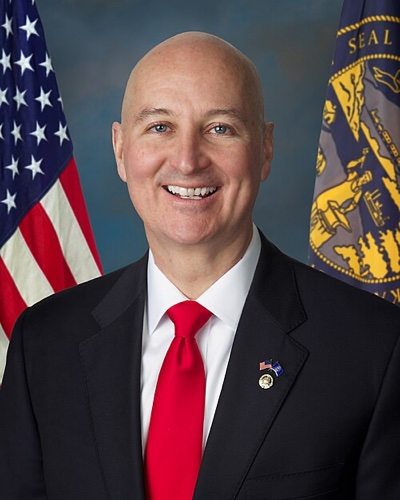

| 최신 여론조사 | ||||||
| 최신순 · 8건 · 양수 = 민주 우위(D+) | ||||||
| 조사기관 | 실사기간 | 모집단 | 표본 | 결과 | 마진 | 비고 |
|---|---|---|---|---|---|---|
| Echelon Insights | 2026-10-16 ~ 2026-10-23 | LV | 407 | Osborn 46 – 47 Ricketts | R+1 | VoteHub 경유(원출처 URL) |
| National Public Affairs | 2026-10-15 ~ 2026-10-18 | LV | 598 | Osborn 47 – 50 Ricketts | R+3 | VoteHub 경유(원출처 URL) |
| National Public Affairs | 2026-10-02 ~ 2026-10-05 | LV | 800 | Osborn 46 – 49 Ricketts | R+3 | VoteHub 경유(원출처 URL) |
| YouGov | 2026-09-24 ~ 2026-10-03 | LV | 1809 | Osborn 48 – 47 Ricketts | D+1 | 일일 브리핑 ? 추출·1차 출처 보강(10/13) · Osborn is Independent (placed in dem slot). YouGov self-sponsored 7-state release (yougov.com article 55703, 2026-10-07). Numbers verified from toplines PDF via pdftotext; undecided allocated by YouGov. MoE ±3.3. |
| co/efficient | 2026-09-28 ~ 2026-09-30 | LV | 1113 | Osborn 45 – 48 Ricketts | R+3 | 무소속 Osborn을 D 칸에 기재 · 하우스 성향 공화계(후원자 없음 — partisan은 의뢰 당파만, 2026-10-13 정리) |
| Wedgewood Polls | 2026-09-14 ~ 2026-09-16 | LV | 500 | Osborn 48 – 52 Ricketts | R+4 | 무소속 Osborn을 D 칸에 기재 |
| SurveyUSA | 2026-09-08 ~ 2026-09-13 | LV | 503 | Osborn 46 – 42 Ricketts | D+4 | 무소속 Osborn을 D 칸에 기재(민주 후보 사퇴) |
| GBAO (D 성향) | 2026-09-03 ~ 2026-09-08 | LV | 800 | Osborn 47 – 46 Ricketts | D+1 | VoteHub 경유(원출처 URL) |
| 출처 URL은 `data/senate_polls.csv`에 행별로 보관합니다. 당파 후원(D/R 성향) 조사는 공개 선택 편향이 있으니 단일 조사보다 여러 조사의 방향을 함께 보세요. 표는 데이터에서 자동 렌더되며 새 조사가 들어오면 갱신됩니다. ★ = 주목 기관(NYT/Siena·Fox News·Marist·AARP) — 추이 그림에서도 큰 점으로 표시합니다. | ||||||
| 이번 주 판독 — **공화 최고위급이 연속 투입됐다** — 밴스 10/22 노스플랫 유세(국내 비료 생산 $13억 발표, 오스본을 '민주당에서 최대한 멀리 달아나려는 민주당원'으로 공격), 툰 원내대표 10/20 프리몬트. 일부 공화 인사는 SLF $1,500만이 MI·MN에 쓰여야 한다고 이견을 냈다(Yahoo/Newsmax). 오스본의 교섭단체 거부 입장은 불변 — 리케츠 패배는 'R−1 · I+1'로 따로 센다. | ||||||
네브래스카 Nebraska
공화당 방어석이지만 2026년 10월 감시주에 편입됐습니다. 2023년 임명돼 2024년 특별선거로 잔여 임기를 채운 현직 Pete Ricketts(공화, 전 주지사)가 무소속 노조 지도자 Dan Osborn과 맞섭니다. 민주당 후보가 사퇴해 사실상 양자 구도이고, Osborn은 2024년에도 무소속으로 Deb Fischer 상원의원을 6.7%p 차까지 추격한 전력이 있습니다. 무소속이 이기려면 무당파 결집에 더해 공화 이탈표가 필요하며, Osborn이 교섭단체를 밝히지 않아 이 사이트는 그를 민주 순증 산수에 넣지 않고 따로 셉니다.
Osborn (무소속) vs Ricketts (R·현직) · NE
공화 방어Cook Likely R 10-23Sabato Lean R 10-15IE Lean R 10-23Kalshi 민주 0¢ 10-25
조사 마진 추이 (양수 = 민주 우위 · 속 빈 점 = 당파 후원 조사)
데이터 기준 2026-10-25
- 여론조사 10-20 — Pollsmax 최신 조사는 여전히 National Public Affairs(공화 성향) 10/5 리케츠 +3(800명 LV), 이어 YouGov 10/3 오스본 +1 · 평균 리케츠 47.4–45.6(+1.7) · 미해결: Pollsmax는 SurveyUSA 9/13과 GBAO를 D 후원으로 표기해 명단의 SurveyUSA 비당파 설명과 충돌.
- 판단 10-29 — 계수 규칙상 리케츠가 지면 R −1, 오스본은 “I +1(코커스 미선언)”이다. 원문은 이 처리를 유지한다.
구도: 공화 방어 — Ricketts(R, 현직·전 주지사) vs Osborn(무소속·노조 지도자, 2024년 재도전). 민주 후보 사퇴로 사실상 양자.
구조 변수: 등록 유권자의 절반이 공화인 주에서 무당파 결집 + 공화 이탈표. 현직의 자기자금 대 도전자의 소액기부. Osborn 교섭단체 미정 → 민주 순증 산수 미포함.
한국 함의: 한국은 네브래스카 소고기 최대 수출시장. Ricketts는 상원 외교위 동아시아 소위원장.
이번 주 변수 주간 10-25 — 밴스 노스플랫(10/22)·툰 프리몬트(10/20) — 공화 방어 심화, 오스본 코커스 거부 불변
로컬 상황 — 일일 기록
로컬 상황 · 일일 정리본에서 날짜별 누적 · 같은 사안은 처음 본 날짜로 한 번
- 10-29 이월: 오스본은 최신 입장(10/17, Nebraska Examiner 좌)에서 소속 정당 코커스를 약속하지 않았다 · Omaha World-Herald(중도우), Nebraska Examiner(좌), Nebraska Public Media는 오늘 미열람이어서 편향 가능성이 있다 · 유세: 2026-10-25 · 오마하 · 로 칸나(민주), 조 월시·마크 라시코트 → 댄 오스본 · 타운홀(이월; WOWT) · 유세: 2026-10-22 · 노스플랫 · JD 밴스(공화) → 피트 리케츠 · 유세(이월)
- 10-28 오스본의 무소속 코커스 입장(10/17, Nebraska Examiner 좌)이 확인된 최신 발언이다 · World-Herald(중도우)는 미열람이라 보도가 한쪽으로 치우쳤다 · 유세: 2026-10-25 · 오마하 · 로 카나(민주), 조 월시, 마크 라시코 → 댄 오스본 · 타운홀(이월, WOWT) · 유세: 2026-10-22 · 노스플랫 · JD 밴스(공화) → 피트 리케츠 · 유세(이월)
- 10-27 24시간 구간 안에 신규 동향은 없다. NRSC는 오스본을 “가짜 무소속 서커스”라 부른다. Omaha World-Herald(중도우)는 읽지 못해 보도가 한쪽에 치우쳤을 수 있다. 유세: 2026-10-25 · 오마하 · 로 카나(민주)·조 월시 전 의원·마크 라코트 → 댄 오스본 · UNO 타운홀, 수백 명 · 유세: 2026-10-22 · 노스플랫 · JD 밴스(공화) → 피트 리케츠 · 유세
- 10-26 이월: 오스본은 어느 당과도 코커스하지 않겠다고 했다(Nebraska Examiner 좌, 10/17). 오늘 읽은 자료에서 변화는 없다 · 오마하 월드헤럴드(중도우)의 카나–월시 유세 기사는 본문을 읽지 못했다 · 유세: 2026-10-25 · 오마하 · 로 카나(민주)·조 월시(전 공화당 의원)·마크 라시코(공화) → 댄 오스본 · UNO 타운홀, 수백 명 · 유세: 2026-10-22 · 노스플랫 · JD 밴스(공화) → 피트 리케츠 · 집회, 수백 명(이월)
- 10-25 이월: 오스본의 공식 입장은 “어느 당과도 코커스를 하지 않겠다”다(Nebraska Examiner 좌, 10/17) · 이번 회차에 §5.1 매체(Omaha World-Herald, Flatwater, Nebraska Public Media)는 읽지 못했다. WOWT는 §5.1 표 밖의 지역 방송이다 · 유세: 2026-10-22 · 노스플래트 · JD 밴스(공화) → 피트 리케츠 · D&N 이벤트센터 유세, 참석자 수백 명(WOWT)~약 1,000명(Plains Sentinel, 성향 불명) · 유세: 2026-10-20 · 프리몬트 · 존 툰(공화) → 리케츠 · 100명 미만.
- 10-24 오스본은 93개 카운티 투어를 마무리하고 있다 · 오스본의 공식 입장은 “어느 쪽 당과도 코커스하지 않겠다”이다(네브래스카 이그재미너 10/17) · 유세: 10/22 · 노스플랫 · JD 밴스(공화) → 리케츠 · 수백 명(WOWT)~약 1,000명(Plains Sentinel) · 유세: 10/20 · 프리몬트 · 존 툰(공화) → 리케츠 · 100명 미만
- 10-23 이월: 오스본은 “어느 정당과도 교섭단체를 구성하지 않겠다”고 말했고 NRSC는 “가짜 무소속 서커스”라 비난(Nebraska Examiner 10/17) · 마리화나당 후보 마이크 마빈은 선거운동을 중단하고 오스본 지지 · 유세: 10/22 · 노스플랫 · JD 밴스(공화) → 피트 리케츠 · D&N 이벤트 센터 유세, 13억 달러 비료 투자 발표, 오스본 공격(WOWT) · Omaha World-Herald(중도우)는 읽지 못함.
- 10-22 사전투표 시작 · 코커스 선언 발견 안 됨(집계 규칙: 오스본 = “I +1(코커스 미선언)”).
- 10-21 이월: 오스번의 코커스 발언은 찾지 못했다 · 의석 계산 규칙 불변: 리켓츠 패배 = R −1, 오스번 = “I +1(코커스 미선언)”
- 10-20 집계 규칙 불변: 리케츠 패배는 R −1, 오스본은 “I +1(코커스 미선언)” · 코커스 관련 새 발언 없음.
- 10-18 NRSC는 오스본을 “가짜 무소속”이라 부른다. 리케츠 캠프와 공화당은 오스본이 2025년 라비스타 타운홀에서 민주당과 코커스하겠다고 말했다는 Plains Sentinel 보도를 근거로 든다. 오스본은 맥락을 떼어낸 가짜뉴스라고 반박했다 · 오스본은 브렝스(SD)·보드나(MT) 무소속 후보와 가상 기자회견을 열었다 · 합법대마 후보 마이크 마빈은 사퇴하며 오스본을 지지했다(나머지 후보 3명) · 조기투표가 진행 중이다.
- 10-17 트럼프 그랜드아일랜드 집회 약 10/5(7일 범위 밖).
기준 2026-10-29 · 최근 12건 표시(전체 23건)
의석 현황 — 현직·공석
- 현직 재선 도전: Pete Ricketts(공화)는 2023년 1월 Ben Sasse 사임으로 Pillen 주지사가 임명했고, 2024년 11월 특별선거에서 62.6%로 잔여 임기를 채웠습니다. 2026년이 첫 정규 임기 도전이며 공석이 아닙니다. (Nebraska Examiner)
개관
- 2024년의 선례: 무소속 Osborn은 2024년 정기 선거에서 민주당이 후보를 내지 않은 가운데 현직 Deb Fischer를 46.5 대 53.2까지 추격했습니다. 트럼프가 같은 날 약 20%p로 이긴 주에서 나온 결과입니다. (Washington Post)
- 유권자 구성: 등록 유권자 1,217,351명 가운데 공화 49.7%, 민주 25.9%, 무당파 22.2%입니다. 무소속 후보가 이기려면 무당파 결집에 더해 공화 이탈표가 필요한 구조입니다. (Nebraska SOS)
- 편입 사유: 조사 접전과 민주당의 Osborn 지원, 공화 슈퍼팩의 뒤늦은 진입이 겹쳐 전국 매체가 ’확장 지도’로 다루기 시작했습니다. 다만 Osborn은 교섭단체를 밝히지 않아 이 사이트의 민주 순증 산수에는 넣지 않고 따로 셉니다.
경제·인구 구성
- 네브래스카 인구는 2024년 7월 1일 기준 약 200만 5465명으로 추산됩니다 (Census QuickFacts).
- 인종 구성은 비히스패닉 백인 73.3%, 흑인 5.8%, 히스패닉 14.4%, 아시아계 3.2%입니다 (Census QuickFacts).
- 2024년 기준 중위 가구소득은 7만 6475달러입니다 (Census QuickFacts).
- 인구 대부분이 오마하·링컨 광역권에 몰려 있고 그 외 지역은 농업 중심의 농촌 지역입니다 (Redfin).
- 주요 산업은 농업·축산, 식품가공, 보험·금융, 운송업이며 옥수수·대두 재배와 소 사육 비중이 큽니다 (Redfin).
- 최대 고용주는 오마하 본사의 버크셔 해서웨이이고 유니언 퍼시픽, 키위트도 대형 고용주입니다 (Zippia).
- 한국 관련 대형 투자 사례는 미확인입니다.
역대 선거 결과의 특징
대선 10회 — 민주 0 · 공화 10 / 상원 (class 1) 7회 — 민주 4 · 공화 3 / 상원 (class 2) 7회 — 민주 1 · 공화 6 / 주지사 10회 — 민주 2 · 공화 8 · 파랑 = 민주, 빨강 = 공화, 회색 = 무소속 · 점선 테두리 = 특별선거 · 칸에 마우스를 올리면 마진 · 출처 위키백과 개별 선거 문서(기준 2026-09-30)
- 2012년 대선은 롬니(R)가 60.1%로 21.9%p 격차로 승리했습니다 (Ballotpedia).
- 2016년 대선은 트럼프(R)가 59.9%로 25.5%p 격차로 승리했습니다 (Ballotpedia).
- 2020년 대선은 트럼프(R)가 58%로 약 19%p 격차로 승리했습니다 (Wikipedia).
- 2024년 대선은 트럼프(R)가 59.3%로 22.4%p 격차로 승리했습니다 (Wikipedia).
- 2020년과 2024년에는 분할 배분 방식에 따라 2선거구에서만 민주당이 선거인단 1석을 가져갔습니다 (Wikipedia).
- 2018년 연방상원은 피셔(R)가 57.69%로 19.1%p 격차로 승리했습니다 (Ballotpedia).
- 2020년 연방상원은 새스(R)가 62.7%로 38.3%p 격차로 승리했습니다 (Wikipedia).
- 2024년 정규 연방상원 선거는 피셔(R)가 53.19%로 6.67%p 격차로 승리했습니다 (Wikipedia).
- 2024년에는 새스 사임에 따른 보궐선거도 함께 치러져 리켓츠(R)가 62.5%로 당선됐습니다 (Nebraska Examiner).
- 주지사는 2018년 리켓츠(R)가 59.0%로 18%p 격차로 승리했습니다 (Wikipedia).
- 2022년 주지사는 필런(R)이 59.22%로 23%p 격차로 승리했습니다 (Wikipedia).
- 네브래스카는 연방·주 선거 전반에서 공화당이 안정적으로 승리하는 강세주이며 오마하 2선거구만 경합성을 보이는 패턴입니다 (Ballotpedia).
주지사·주의회
- 현 주지사는 짐 필런(공화, 2023년 1월 5일 취임)이며 임기는 2027년 1월까지입니다 (Ballotpedia).
- 필런은 2026년 재선에 도전한다고 선언했습니다 (WOWT).
- 주의회는 단원제 49석으로 공식적으로 비정파 선거입니다 (Ballotpedia).
- 사실상 정당별 구성은 공화 33석, 민주 14석, 기타 2석입니다 (기준일 2024년 11월) (Ballotpedia).
- 주지사와 단원제 의회를 공화당이 사실상 장악해 공화 트라이펙타로 분류됩니다 (270toWin).
- 2026년에는 주지사·부지사, 주무장관, 단원제 49석 중 24석이 함께 걸려 있습니다 (Ballotpedia).
유권자 등록·투표율
- 2026년 9월 28일 기준 등록 유권자는 총 121만 7351명입니다 (Independent Voter Project).
- 정당별로는 공화 49.7%, 민주 25.9%, 무소속 22.2%, 기타 2.2%입니다 (Independent Voter Project).
- 적격인구 기준(VEP) 투표율은 2018년 51.5%, 2020년 69.5%였습니다 (Ballotpedia).
- 적격인구 기준(VEP) 투표율은 2022년 48.4%, 2024년 68.0%였습니다 (Ballotpedia).
댄 오즈번 Dan Osborn무소속
1975년생(51세) · 산업기계공·전 BCTGM Local 50G 노조위원장(2021년 Kellogg’s 77일 파업 주도) · 해군·주방위군 복무
가족 부인 Megan, 자녀 3명
학력 미확인
경력 2024 상원(정기) 무소속 46.5% vs Fischer 53.2% · 2026: 민주 후보 Burbank 7/17 사퇴로 사실상 양자 구도
펀드레이징 후보 위원회 누적 모금 1,103만 달러 · 보유현금 195만 달러 (FEC, 10/14 보고)
우호 외부지출 2,402만 달러 (FEC 독립지출, 10/21까지) · 선거운동 트래커 광고 상세
우호 외부지출 2,402만 달러 (FEC 독립지출, 10/21까지) · 선거운동 트래커 광고 상세
강점
- 2024년 석패로 쌓은 인지도와 소액기부 기반(1분기 모금 Ricketts 상회)
- 노조·초당파 아웃사이더 이미지
- 주 민주당이 사실상 지원하는 유일 대안 후보
약점
- 현금 240만 달러로 Ricketts의 3분의 1
- 비호감도 50%, 낙태 입장을 웹사이트에서 지운 데 대한 공격
- 교섭단체 미정 — 당선 시 상원 산수에서의 위치가 불확실
정책 Roe 기준 낙태권 · 전면 관세 반대·표적 관세 · 소고기 관세면제 비판
🇰🇷 한국 함의 한국 관련 발언 미확인.

피트 리케츠 Pete Ricketts공화 · 현직
1964년생(62세) · 현직 상원의원(2023~, 2023년 임명·2024년 특별선거 당선) · 전 주지사(2015~2023) · Ameritrade 전 COO
가족 부모 Joe·Marlene Ricketts(TD Ameritrade 창업)
학력 시카고대 생물학 학사·MBA
경력 2024 상원 특별선거 62.6% vs Love 37.4% · 2026 공화 경선(5/12) 81.5% · 2014·2018 주지사 당선
펀드레이징 후보 위원회 누적 모금 1,455만 달러 · 보유현금 122만 달러 (FEC, 10/14 보고)
우호 외부지출 1,831만 달러 (FEC 독립지출, 10/21까지) · 선거운동 트래커 광고 상세
우호 외부지출 1,831만 달러 (FEC 독립지출, 10/21까지) · 선거운동 트래커 광고 상세
강점
- 현직·자기자금(2분기 630만 중 520만 자기자금)·농업단체 지지
- 현금 보유 690만 달러로 Osborn의 약 3배
- 세 기관 모두 Likely R/Lean R
약점
- 비호감도 47%, ‘억만장자가 선거를 산다’ 공격 소재
- 2024년에도 무소속 Osborn에게 53–47로 좁혀진 전력
- 관세·소고기 관세면제 등 농업 이슈에서 수세
정책 낙태 제한(2024 Initiative 434 지지) · 트럼프 관세·무역협상 옹호 · 상원 외교위 동아시아 소위원장
🇰🇷 한국 함의 외교위 동아시아 소위원장. 트럼프의 한국 포함 아시아 무역협상을 환영하는 성명을 냈습니다.
경선 결과 (5/12)
공화 경선은 현직 Ricketts가 81.5%로 통과했습니다(Knobel 8.1%, Schultz 6.0%). 민주 경선은 Cindy Burbank가 89.5%로 지명됐으나 7월 17일 사퇴했고, 주무장관은 그를 투표용지에서 뺐습니다. Burbank는 공식 지지 선언 없이 “Osborn이 공정한 기회를 가질 자격이 있다”고 말했습니다. 본선 용지에는 Ricketts·Osborn 외에 America First Party의 Chuck Conboy, Working People Party의 Robin Richards 등이 오릅니다. (NE Public Media · Nebraska Examiner)
roll-call / 입법 관심사
Pete Ricketts (R, 현역) — 상원 외교위 동아시아·태평양 소위원장. 트럼프의 한국 포함 아시아 무역협상을 “약 1조 달러 투자 유치”로 환영하는 성명을 냈습니다. 농업 관세와 소고기 관세면제 논쟁에서는 행정부 노선을 옹호합니다. (Ricketts 상원실)
Dan Osborn (무소속) — 선출직 경력이 없어 표결 기록이 없습니다. 주 박람회 토론에서 전면 관세 반대·표적 관세 지지, 소고기 관세면제 비판, Roe 기준 낙태권을 밝혔습니다. 한국 관련 발언은 미확인입니다. (Sandhills Express)
경선·본선 방식
- 당파 경선·단순다수 본선: 5월 둘째 화요일(2026년 5/12) 당파 경선 뒤 11/3 본선은 단순다수제이고 결선은 없습니다. 무소속은 청원 서명으로 본선에 직행하며, 경선에서 지명된 정당 후보가 사퇴하면 그 자리는 공석으로 남습니다(Burbank 사례). (Nebraska SOS)
- 초당파 단원제 의회: 네브래스카 주의회는 49석 단원제이며 공식적으로 무당파로 선출됩니다. 주 정치에서 ‘무소속’ 호소가 다른 주보다 낯설지 않은 배경입니다.
- 선거인단 분할: 대선 선거인단을 선거구별로 배분하는 두 주 가운데 하나로, 오마하의 NE-02가 2008·2020·2024년 민주 쪽으로 갈렸습니다.
우편·조기 투표
- 사전(부재자)투표는 사유 불문 신청 가능한 무자격사유 제도입니다 (Nebraska SOS).
- 2026년 본선 신청 마감은 선거 전 둘째 금요일인 10월 23일 오후 6시입니다 (Nebraska SOS).
- 용지는 우편·드롭박스·직접제출 모두 선거일 투표 마감까지 도착해야 유효하며 소인만으로는 인정되지 않습니다 (Nebraska SOS).
- 대면 조기투표는 카운티 선거사무소에서 진행되며 통상 총선 35일 전부터 용지가 발송됩니다 (Nebraska SOS).
- 인구 1만 명 미만인 11개 카운티는 투표소 없이 전면 우편투표를 실시합니다 (Nebraska Public Media).
- 해당 11개 카운티는 분·시더·체리·클레이·도스·딕슨·가든·녹스·메릭·모릴·스탠턴입니다 (Nebraska Public Media).
- 오마하·링컨 등 대도시 카운티는 주법상 전면 우편투표가 금지됩니다 (Nebraska Public Media).
- 드롭박스는 카운티별로 운영되며 세부 위치는 공식 조회 서비스에서 확인할 수 있습니다 (Nebraska SOS).
- 임시투표는 투표소 명부에 이름이 없거나 신분증이 없을 때 인정됩니다 (Nebraska Legislature).
유권자 등록
- 2026년 본선 등록 마감은 온라인·우편이 10월 16일입니다 (Nebraska SOS).
- 방문 등록 마감은 10월 23일 오후 6시입니다 (Nebraska SOS).
- 온라인 등록이 가능하며 주무장관 홈페이지에서 신청할 수 있습니다 (Nebraska SOS).
- 자동유권자등록(AVR) 여부는 공식 사이트에서 미확인입니다.
- 당일등록은 허용되지 않습니다 (Nebraska SOS).
신분 확인
- 2022년 주민투표(이니셔티브 432)로 사진 신분증 제시를 의무화하는 헌법개정이 통과됐습니다 (Nebraska SOS).
- 시행법 LB514에 따라 2024년 5월 14일 예비선거부터 사진 신분증 제시가 요구됩니다 (Nebraska SOS).
- 신분증 요건은 사진 포함을 요구하는 방식입니다 (Nebraska SOS).
- 인정 신분증은 네브래스카 운전면허증·주 ID, 대학 ID, 부족 ID, 지방정부 발행 ID, 미국 여권, 군 ID입니다 (Nebraska SOS).
- 신분증이 없는 유권자는 투표용 주 ID를 무료로 발급받을 수 있습니다 (Nebraska SOS).
- 신분증이 없어도 합당한 장애나 촬영에 대한 종교적 거부가 있으면 임시투표가 허용됩니다 (Nebraska SOS).
- 이 제도는 2024년에 새로 시행된 변경 사항입니다 (Nebraska SOS).
최근 14일 · 최신 10월 29일 (목) · 원천은 상원 일일 브리핑(매일 오전 갱신)입니다. “정리본”은 발행 단계에서 고정 구조로 압축한 것(원문에 없는 수치는 넣지 않음), “원문 전재”는 브리핑을 그대로 옮긴 것입니다. 종결체가 다르고, 이후 정정된 사실이 있을 수 있습니다. 판세의 현재 값은 위 카드·표를 보세요.
10월 29일 (목) · 정리본
- 수집 구간 내 유의미한 신규 사안 없음.
- 여론조사: 없음(직전: co/efficient(공화 성향) 9/28–30, LV 1,113명, ±2.9, 리케츠 48, 오스본 43 · YouGov 9/24–10/3, LV 1,809명, ±3.3, 오스본 48, 리케츠 47 · SurveyUSA 9/8–13, LV 503명, ±6.4, 오스본 46–42)
- 자금: 없음
- 로컬: 이월: 오스본은 최신 입장(10/17, Nebraska Examiner 좌)에서 소속 정당 코커스를 약속하지 않았다 · Omaha World-Herald(중도우), Nebraska Examiner(좌), Nebraska Public Media는 오늘 미열람이어서 편향 가능성이 있다 · 유세: 2026-10-25 · 오마하 · 로 칸나(민주), 조 월시·마크 라시코트 → 댄 오스본 · 타운홀(이월; WOWT) · 유세: 2026-10-22 · 노스플랫 · JD 밴스(공화) → 피트 리케츠 · 유세(이월)
- 주 함의: 계수 규칙상 리케츠가 지면 R −1, 오스본은 “I +1(코커스 미선언)”이다. 원문은 이 처리를 유지한다.
원천: _NIS 상원 일일 브리핑 KR(2026-10-16 ~ 2026-10-29). 추출 scripts/ingest_senate_daily.py · 렌더 daily_log_md().
조사 동향 — 일일 기록
여론조사 동향 · 일일 정리본에서 날짜별 누적 · 같은 사안은 처음 본 날짜로 한 번
- 10-20 Pollsmax 최신 조사는 여전히 National Public Affairs(공화 성향) 10/5 리케츠 +3(800명 LV), 이어 YouGov 10/3 오스본 +1 · 평균 리케츠 47.4–45.6(+1.7) · 미해결: Pollsmax는 SurveyUSA 9/13과 GBAO를 D 후원으로 표기해 명단의 SurveyUSA 비당파 설명과 충돌.
- 10-16 co/efficient(10/2, LV 1,113, ±2.9) 리케츠 45, 오스본 40, 기타·미정 15% · Wedgewood(9/16, LV 500, ±4.4) 리케츠 52–48 · SurveyUSA(9/14, LV 503, ±6.4) 오스본 46–42.
- 10-14 없음. 직전 조사는 co/efficient(공화 성향, 10/2) 리케츠 45–40(1,113명 LV, ±2.9), Wedgewood(9/16) 52–48, SurveyUSA(9/14) 오스본 46–42(503명, ±6.4), Tavern Research(5/11) 오스본 47–42다. 쿡(9/23)은 Likely R로 평가했다.
- 10-13 신규 co/efficient(게재 10/2, 공화 성향, LV 1,113, ±2.9) 리케츠 45–40 · 이 밖에 웨지우드 9/16 리케츠 52–48, SurveyUSA 9/14 오스본 46–42, Tavern Research 5/11 오스본 47–42 · 최근 3건 평균 오스본 44.7, 리케츠 46.3(270toWin) · co/efficient 수치는 프롬프트 명단의 48–45(9/28–30)와 달라 미해결이다.
- 10-10 YouGov 10/6 오스본 48, 리켓츠 47 · co/efficient(공화 성향) 9/28–30 리켓츠 48–45
- 10-08 YouGov(10/6) 오스본 48–47 · co/efficient(공화당 성향, 조사 9/28–30) 리케츠 48–43 · RCP는 9/23 Leans R → Toss-up으로 조정했으나 평균은 공표하지 않았다.
- 10-07 YouGov(10/6) 오스번 48–리켓츠 47 · co/efficient(공화 성향, 9/28–30) 리켓츠 +3 · Wedgewood(9/14–16) 리켓츠 +4로 조사기관별로 갈린다(RealClearPolling)
- 10-06 co/efficient(공화당 성향 조사기관) 10/2 리케츠 48–43(RCP 목록. 프롬프트 명단은 48–45, 9/28–30으로 서로 달라 미해결) · 명단에 SurveyUSA 9/8–13 오스본 46–42, Wedgewood 9/14–16 리케츠 52–48도 있다.
기준 2026-10-29 · 최근 8건 표시(전체 8건)
최신 자금 상황 (기준 2026-10-25) — 3분기 Osborn $410만 vs Ricketts $220만(원천 상원 주간 10/25) · SLF 네브래스카 누계 $1,500만 · Fairshake $7M(이월)
| FEC 분기 신고 — 사이클 누적 | ||||
| 취득 2026-10-26 · 단위 $M · 후보 본인 위원회 기준 | ||||
| 후보 | 정당 | 사이클 누적 모금 | 보유 현금 | 보고 마감 |
|---|---|---|---|---|
| 피트 리케츠 (Pete Ricketts) | 공화 | $14.55M | $1.22M | 2026-10-14 |
| 댄 오즈번 (Dan Osborn) | 무소속 | $11.03M | $1.95M | 2026-10-14 |
| `scripts/fetch_fec_fundraising.py`가 FEC API에서 주간 취득한 원장입니다(자동). **슈퍼팩 외부지출은 포함되지 않습니다** — 이 사이클에서는 외부지출이 후보 자금보다 큰 주가 여럿이라, 위 상자의 외부지출 메모와 함께 보세요. 【수집】은 해당 후보의 FEC 신고가 아직 없다는 뜻입니다(추정으로 채우지 않음). FEC는 법적 이름으로 신고되므로 표기가 이 사이트와 다를 수 있습니다. | ||||
이 레이스의 자금은 현직의 자기자금 대 도전자의 소액기부 구도입니다. Ricketts는 2분기 모금 630만 달러 가운데 520만 달러를 자기 돈으로 넣어 현금 690만 달러를 쌓았고, Osborn은 1분기에 모금액으로 현직을 앞섰지만 현금은 240만 달러에 그칩니다. 외부에서는 SLF 계열 신생 단체 Cornhusker Majority가 9월 중순 140만 달러 광고로 들어와 누적 380만 달러에 이르렀습니다. 네브래스카는 SLF의 당초 우선 5개 주에 없던 곳이라, 이 진입 자체가 공화 지도부가 레이스를 접전으로 본다는 신호로 읽힙니다. (Nebraska Examiner · Axios)
자금 투입·지출 — 일일 기록
자금 투입·지출 · 일일 정리본에서 날짜별 누적 · 같은 사안은 처음 본 날짜로 한 번
- 10-28 SLF가 리케츠에 1,500만 달러를 계획하고 있다(Newsweek).
- 10-25 SLF가 리케츠에 800만 달러를 추가해 총 1,500만 달러가 됐다(Newsmax via Yahoo, 10/17).
- 10-24 SLF가 8백만 달러를 추가해 리케츠 지원이 총 1,500만 달러다(뉴스맥스/야후 10/17). 일부 공화당원은 이 돈을 MI·MN에 써야 한다며 의문을 제기했다.
- 10-23 SLF 연계 슈퍼팩 광고가 2025년 타운홀 발언에 관한 Plains Sentinel 보도를 인용, 오스본은 “가짜 뉴스”라 반박(Sentinel이 이후 녹음 공개)(Nebraska Examiner 10/17, 좌).
- 10-22 3분기 FEC: 오스본 모금 410만 달러(현금 220만 달러) 대 리케츠 220만 달러(현금 110만 달러)(Spokesman-Review 10/16) · SLF 연계 슈퍼팩의 오스본 공격 광고(Nebraska Examiner 좌).
- 10-18 SLF 연계 슈퍼팩 Cornhusker Majority가 오스본의 민주당 코커스 발언 보도(Plains Sentinel)를 광고에 썼다. 금액은 기사에 없다.
- 10-16 이월(AP, 10/13): SLF가 리케츠 지원에 1,500만 달러, Fairshake가 700만 달러를 쓴다.
- 10-15 SLF 1,500만 달러 투입 · Fairshake 700만 달러 광고 개시(AdImpact).
- 10-08 SMP의 9개 지원 주에 네브래스카는 없다(States Newsroom).
- 10-06 배경: FEC 6월 기준 보유 현금은 리케츠 690만 달러, 오스본 240만 달러(Nebraska Public Media, 중도좌, 9/1).
기준 2026-10-29 · 최근 10건 표시(전체 10건)
한국은 네브래스카 소고기의 최대 수출시장입니다. 2022년 기준 5.84억 달러로, 이 주 농축산 경제의 가격 민감도가 한미 통상 조건에 직접 닿습니다. Pillen 주지사는 2023년 한국·일본 무역사절단을 이끌었고, 2026년 7월 사절단은 일본·필리핀 중심이었습니다.
- Ricketts는 상원 외교위 동아시아 소위원장으로 한국 관련 발언 창구가 가장 넓은 후보입니다. 트럼프의 아시아 무역협상을 환영했고, 관세 국면에서 농업 수출시장 확보를 행정부 노선 안에서 말합니다.
- Osborn은 전면 관세에 반대하고 소고기 관세면제를 비판합니다. 한국을 직접 거론한 발언은 미확인입니다.
- 어느 쪽이 이기든 네브래스카의 이해는 소고기·옥수수의 아시아 시장 접근으로 수렴합니다. 신규 동향은 Korea Watch에 기록합니다. (Nebraska Examiner · KLIN)
작성 2026-10-05 · 등급: Cook Likely R(9/23) · Sabato Likely R(9/22) · Inside Elections Lean R(10/1) · 예측시장 Kalshi 공화 73¢(무소속 미상장)